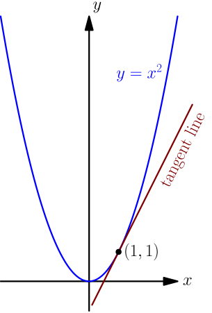
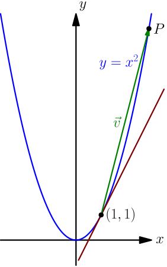
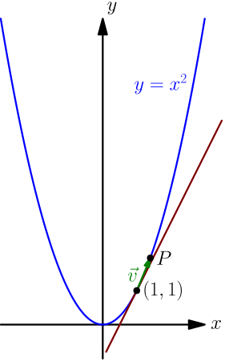

Definition of Derivative¶
To motivate the definition of derivative, we show several different examples.
Walking speed¶
Let's say that you're walking along a line. You might know that $$ \text{speed} = \frac{\text{distance}}{\text{time}}. $$ For example, if we move $3$ metres during $2$ seconds, then the speed would be $\frac 3 2 = 1.5$ metres per second. This is actually not quite right; the average speed is distance divided by time, $1.5$ metres per second, but your actual speed might vary during those 2 seconds.
To approximate the actual speed, we can do the same thing with a small time interval. For example, if we move $0.2$ metres during $0.1$ seconds, then the average speed during the $0.1$ seconds is $$ \frac{0.2\text{ metres}}{0.1\text{ seconds}} = 2\text{ metres per second}, $$ which measures your speed quite accurately. To get the exact speed, we can do $$ \text{speed} = \lim_{\text{time} \to 0} \frac{\text{distance}}{\text{time}}. $$ By definition of limit, we can approximate the limit to any precision we want by measuring with a small enough time interval, so it must be your speed.
Let $t$ denote time as seconds, and let $w(t)$ denote the distance that you have walked at time $t$. Let $h$ be the length of the time interval (above we had examples with $h=2$ and $h=0.1$). Consider the two moments at time $t$, and a little bit after it, at time $t+h$. The corresponding walked distances are $w(t)$ and $w(t+h)$, so the distance walked during the time interval is $$ \text{distance} = w(t+h) - w(t). $$ Plugging everything in, we get $$ \text{speed} = \lim_{\text{time} \to 0} \frac{\text{distance}}{\text{time}} = \lim_{h \to 0} \frac{w(t+h)-w(t)}{h}. $$ Here $h \to 0$ means that $h$ can be negative; that means measuring the distance between a moment just a little bit before $t$ and the moment $t$.
Download speed¶
Let's say that we are downloading a big file. You might know that $$ \text{downloading speed} = \frac{\text{amount of downloaded data}}{\text{time spent downloading}}. $$ For example, if $3\text{MB}$ gets downloaded in $2$ seconds, then the download speed would be $\frac 3 2 = 1.5$ megabytes per second. This is not quite right; the average speed is amount of data divided by time, $1.5$ megabytes per second, but the actual downloading speed might vary during those 2 seconds.
To approximate the actual downloading speed, we can do the same thing with a small time interval. For example, if we download $0.2\text{MB}$ during $0.1$ seconds, then the average downloading speed during the $0.1$ seconds is $$ \frac{0.2\text{MB}}{0.1\text{ seconds}} = 2\text{MB per second}, $$ which measures the downloading speed quite accurately. To get the exact speed, we can do $$ \text{downloading speed} = \lim_{\text{time} \to 0} \frac{\text{amount of downloaded data}}{\text{time}}. $$ By definition of limit, we can approximate the limit to any precision we want by measuring with a small enough time interval, so it must be the downloading speed.
Let $t$ denote time as seconds, and let $D(t)$ denote the amount of data downloaded at time $t$. Let $h$ be the length of the time interval (above we had examples with $h=2$ and $h=0.1$). Consider the two moments at time $t$, and a little bit after it, at time $t+h$. The corresponding amounts of downloaded data are $D(t)$ and $D(t+h)$, so the data downloaded during the time interval is $$ \text{amount of downloaded data} = D(t+h) - D(t). $$ Plugging everything in, we get $$ \begin{align} \text{downloading speed} &= \lim_{\text{time} \to 0} \frac{\text{amount of downloaded data}}{\text{time}} \\ &= \lim_{h \to 0} \frac{D(t+h) - D(t)}{h}. \end{align} $$ Here $h \to 0$ means that $h$ can be negative; that means calculating the amount of data downloaded between a moment just a little bit before $t$ and the moment $t$.
Slope of tangent line¶
Let's say that we want to find the tangent line of the parabola $y = x^2$ at the point $(1,1)$.

To find the equation of a tangent line, we only need to find its slope; once we have the slope, we can plug that and the point $(1,1)$ into this result.
We know that if we have a tangent line, then any nonzero vector $\vec d$ along the tangent line gives the slope as $\frac{d_y}{d_x}$. We can't find a vector like that easily, but we can instead consider a vector between $(1,1)$ and some other point $P$ on the graph.

If we do $\frac{v_y}{v_x}$, we don't quite get the slope of the tangent line because $\vec v$ doesn't go in the direction of the tangent line. However, if the point $P$ is near $(1,1)$, then $\vec v$ goes almost in the direction of the tangent line and $\frac{v_y}{v_x}$ is almost equal to the slope:

To get the exact slope, we can take a limit of $\frac{v_y}{v_x}$ with the point $P$ approaching the point $(1,1)$. We can approximate the slope of the tangent line to any precision we want by bringing $P$ close enough to $(1,1)$, so by definition of limit, the slope of the tangent line is the limit.
Let $h = v_x$. Then the $x$ coordinate of $P$ is $1+h$, and because $P$ is a point on the graph $y=x^2$, the $y$ coordinate is $(1+h)^2$. This means that $$ v_y = (1+h)^2 - 1, $$ so $$ \frac{v_y}{v_x} = \frac{(1+h)^2 - 1}{h}. $$ To bring the points closer to each other, we can take a limit with $h \to 0$, because $h$ is the difference of the $x$ coordinates of the points: $$ \text{slope of tangent line} = \lim_{h \to 0} \frac{(1+h)^2 - 1^2}{h} $$ Calculating this limit is straight-forward (expand the top, cancel a lot of things and then use limit properties).
The definition¶
All of the above examples resulted in a limit of the form $$ \lim_{h \to 0} \frac{f(a+h) - f(a)}{h}, $$ where $a$ was some number and $f$ was some function. Now we give a name for limits like this; this is the derivative of $f$ at $a$. So, when you are learning to calculate derivatives, you simultaneously learn to calculate speeds of moving objects, downloading speeds, tangent line slopes and many other things that can be described with a derivative.
For example, let $f(x) = x^2$. The derivative of $f$ at any number $a$ is $$ \begin{align} \lim_{h \to 0} \frac{f(a+h) - f(a)}{h} &= \lim_{h \to 0} \frac{(a+h)^2 - a^2}{h} \\ &= \lim_{h \to 0} \frac{a^2 + 2ah + h^2 - a^2}{h} \\ &= \lim_{h \to 0} \frac{2ah + h^2}{h} \\ &= \lim_{h \to 0} (2a + h) \\ &= \lim_{h \to 0} 2a + \lim_{h \to 0} h = 2a. \end{align} $$ Here are several ways to interpret the result:
- A tangent line of the graph $y=x^2$ going through the point $(a, a^2)$ has slope $2a$.
- If your location at $t$ seconds is $t^2$ metres, then your speed at any time $t$ is $2t$ metres per second.
- If the amount of data downloaded at $t$ seconds is $t^2$ megabytes, then the downloading speed at any time $t$ is $2t$ megabytes per second.